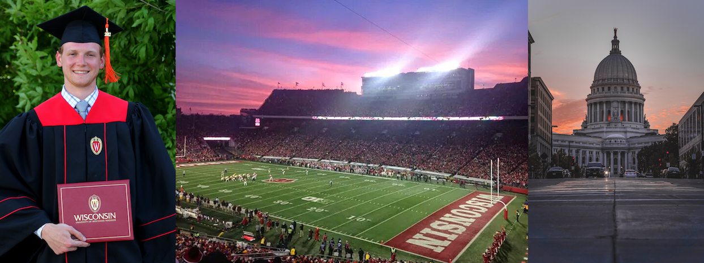
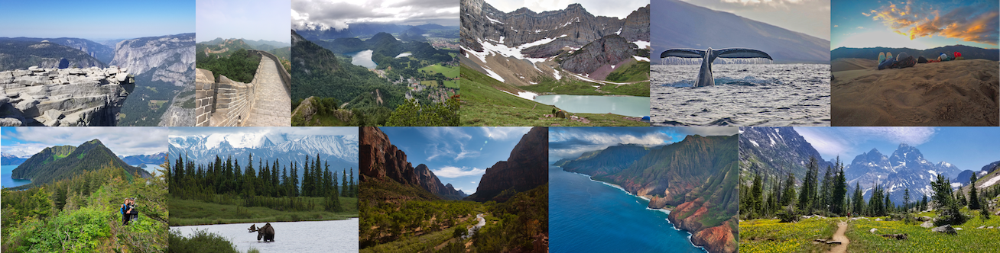
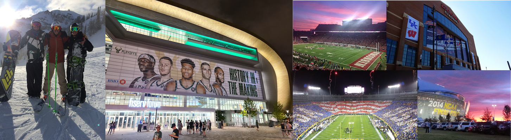
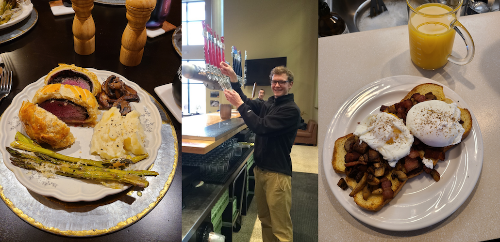

About Me
I'm from Madison, WI. I attended the University of Wisconsin-Madison, studying Chemcial Engineering. Since graduating in the summer of 2017 I've worked in various engineering, data analysis, management and design of experiment aspects. I am self driven, always looking for new ways to improve on current skills and learn new skills and hobbies.
Outdoors/Travel
I love any activity that involves the outdoors including camping, backpacking, snowboarding/skiing, biking (road and mountain), pond hockey, and many more. I am a fan of all four seasons and enjoy the variety of temperature, scenes, and activies each season brings. Experiencing different environments led to my passion for travelling. I hope to go to all of the US National Parks and travel to every continent (South America, Africa, and Antartica still to go). Travelling has allowed me to interact, learn, and appreciate a wide variety of individuals and cultures.
Sports
I enjoy watching and playing most sports. I love the passion it brings out of both the atheletes and spectators. My favorite sport is soccer and I've been playing as long as I can remember. I still play in multiple leagues year round. I am a fan of US Soccer and Chelsea FC. I'm also a fan of all UW-Madison sports, Milwaukee Bucks, Milwaukee Brewers, and Green Bay Packers.
Brewing/Cooking/Baking
My experiences in life have helped mold a passion for home brewing, cooking and baking. My chemical engineering background turned all three into at home experiments understanding the chemical and physical interactions of the equipment and ingredients. My traveling expereince has opened my mind to new flavors and techniques. And it is always a plus eating delicious food and treats.
